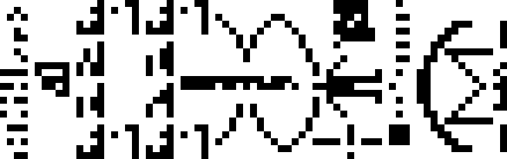

Kelvin versioning uses integers in degrees Kelvin, counting down toward a final specification, upon reaching absolute zero, it is frozen. Further updates are no longer possible. It contrasts with how typical software is designed to indefinitely increase in scope, and complexity.
Taking advantage of today's abundance in computing power to prepare for a future in which infrastructures have collapsed.
Collapse computing prioritizes community needs and aims to contribute to a knowledge commons in order to sustain the practice of computation through infrastructure collapse, it is the practice of engaging with the discarded with an eye to transform what is exhausted and wasted into renewed resources.
Failure Scenarios
- Supply: Difficulty to get new devices and peripherals because new ones are no longer produced, or unavailable.
- Power: Access to power is intermittent, or routed to address more critical needs than powering computers.
- Connectivity: Access to the internet is intermittent due to degraded infrastructure, or prohibited for geopolitical reasons.
- Obsolecence: Inoperability due to undocumented or incompatible peripherals and software.
- Planned Obsolesence: Inoperability from expiring certificates, copy protection, or other artificial means.

Designing for Descent ensures that a system is resilient to intermittent energy supply and network connectivity. Nothing new needs producing and no e-waste needs processing. If your new software no longer runs on old hardware, it is worse than the old software. Software should function on existing hardware and rely on modularity in order to enable a diversity of combinations and implementations. It is about reinventing essential tools so that they are accessible, scalable, sturdy, modular, easy to repair and well documented.
A post-collapse society that has eventually lost all of its artificial computing capacity may still want to continue the practice of computer science for various reasons.
| Four Concepts Of Resilience | |
|---|---|
| Agility | The capacity to adapt or respond rapidly to a changing environment. |
| Preparedness | The ability to reflect on past threats, and bouncing forward by enacting new ideas for development after a crisis event. |
| Elasticity | Increasing the exchangeability and flexibility of relationships among people and things within an organization and a wider ecosystem. |
| Redundancy | The intentional duplication of critical components with the goal of increasing the reliability of a system. |
| Even Check | |
|---|---|
| Message | Parity Bit |
| 1101 001 | 1 |
Designing for decay is to harden messages via error correction by transmitting additional information to catch information loss or tampering. For example, by adding a parity bit that corresponds to the odd or even number of active bits in a specific length of data.
The Arecibo Message is an interstellar radio message for which receiver's capabilities are unknown, the length of the message was chosen to be a semiprime so its dimension(73 rows by 23 columns) could be inferred from an otherwise totally headerless message.
A decay hardened quine refers to a programming concept where a quine program, a program that prints its own source code, is designed to be robust against character corruption or "decay."

And one voice, with sublime disregard for the situation, read poetry aloud in the firey study, until all the film spools burned, until all the wires withered and the circuits cracked.Ray Bradbury, There Will Come Soft Rains
- CollapseOS
- Where did that prebuilt binary come from?
- Four concepts for resilience
- Terminal Event Management Policy, satire
incoming: about 2023 permacomputing obsolescence